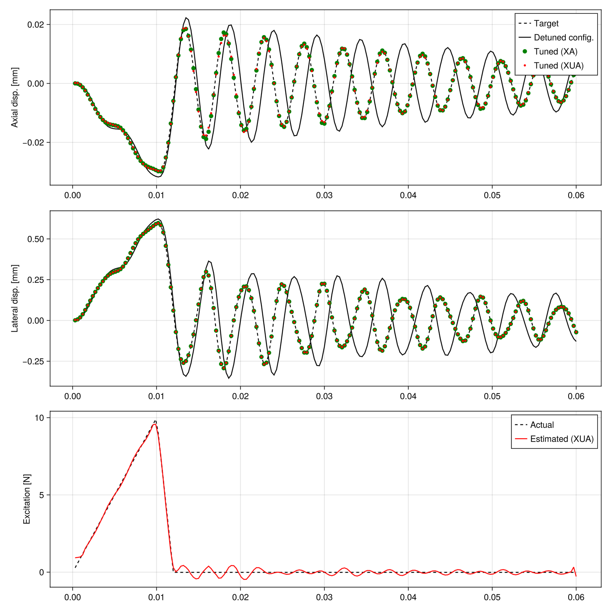

Tuning vibrations of a tuning fork
Tuning forks should resonate at a desired frequency when subjected to an impulsive load. Achieving the right frequency cab be done by adding material or filing material off the prongs. We start from a target solution establihed using SweepX. A sprious mass is then introduced, parametrized by an A-dof. We use the SweepXA and DirectXUA solvers to estimate how much mass should be removed. In SweepXA, the excitation is assume to be known, while it is estimated by DirectXUA.
using Muscade, StaticArrays, GLMakie, Muscade.ToolboxDimensions of the tuning fork and number of elements
l₀=2.5e-2; n₀=1 # base - length and number of elements
l₁=1e-2; n₁=1 # fork - length and number of elements per side
l₂=9.5e-2; n₂=5 # prong - length and number of elements per side
b = 5e-3; # thickness of the cross-section
E = 210e9; # Young modulus
G = 79.3e9; # shear modulus
μ = 7850. *b^2; # mass per unit length, assumes steel
beamCrossSection = BeamCrossSection(EA=E*b^2, EI₂=1/12*E*b^4, EI₃=1/12*E*b^4, GJ=1/3*G*b^4, μ=μ, ι₁=1/6*μ*b^2,Cl₂=10.,Cl₃=10.);Define an A-parametrized point mass element (inducing an inertia force)
struct LumpedMass <: AbstractElement; m :: 𝕣; end
LumpedMass(nod::Vector{Node};m::𝕣) = LumpedMass(m)
@espy function Muscade.residual(o::LumpedMass, X,U,A, t,SP,dbg); return SVector((o.m+A[1]).*∂2(X)),noFB; end
Muscade.doflist( ::Type{LumpedMass}) = (inod =(1,1,1,2), class=(:X,:X,:X,:A), field=(:t1,:t2,:t3,:mass));Define an U-parametrized force acting along t2
struct UnknownPointForce <: AbstractElement end
UnknownPointForce(nod::Vector{Node}) = UnknownPointForce()
@espy function Muscade.residual(o::UnknownPointForce, X,U,A, t,SP,dbg); return SVector(- U[1]),noFB; end
Muscade.doflist( ::Type{UnknownPointForce}) = (inod =(1,2), class=(:X,:U), field=(:t2,:t2));Time step and simulation length settings
Δt = 3e-4;
nDynamicLoadSteps = 200;
timeVec = Δt:Δt:nDynamicLoadSteps*Δt;Coordinates of the nodes.
XnodeCoord = vcat(
hcat((0:n₀) * l₀/n₀ , zeros(n₀+1,1) , zeros(n₀+1,1) ), # base nodes
hcat(ones(n₁,1)*l₀ , (1:n₁)*l₁/n₁ , zeros(n₁,1) ), # upper fork
hcat(ones(n₁,1)*l₀ , -(1:n₁)*l₁/n₁ , zeros(n₁,1) ), # lower fork
hcat(l₀ .+ (1:n₂)*l₂/n₂ , ones(n₂,1)*l₁ , zeros(n₂,1) ), # upper prong
hcat(l₀ .+ (1:n₂)*l₂/n₂ , -ones(n₂,1)*l₁, zeros(n₂,1) ) # lower prong
)14×3 Matrix{Float64}:
0.0 0.0 0.0
0.025 0.0 0.0
0.025 0.01 0.0
0.025 -0.01 0.0
0.044 0.01 0.0
0.063 0.01 0.0
0.082 0.01 0.0
0.101 0.01 0.0
0.12 0.01 0.0
0.044 -0.01 0.0
0.063 -0.01 0.0
0.082 -0.01 0.0
0.101 -0.01 0.0
0.12 -0.01 0.0External excitation load at the end of the upper prong
pling = Muscade.FunctionFromVector([-10, 0, 10e-3, 12e-3, 10],[0,0,10,0,0]);
@functor with() pling_(t) = pling(t)
plingNode = n₀+2n₁+n₂+1; # where do we hit the tuning forkBuilding the model
model = Model(:TuningFork);Add the nodes describing the beam model, the node that will contain the parameter to optimize, and the node that will contain the load to estimate in DirectXUA
Xnod = addnode!(model,XnodeCoord)
Anod = addnode!(model,Vector{𝕣}(undef,3))
Unod = addnode!(model,Vector{𝕣}(undef,3));List of nodes that will be used to create the beam elements
nel = n₀+2n₁+2n₂
mesh = vcat(
hcat(Xnod[1:n₀],Xnod[2:n₀+1]), # base
hcat(Xnod[n₀+1:n₀+n₁],Xnod[n₀+2:n₀+n₁+1]), # upper fork
[Xnod[n₀+1] Xnod[n₀+n₁+2]], hcat(Xnod[n₀+n₁+2:n₀+2n₁],Xnod[n₀+n₁+3:n₀+2n₁+1]) , # lower fork
[Xnod[n₀+n₁+1] Xnod[n₀+2n₁+2]], hcat(Xnod[n₀+2n₁+2:n₀+2n₁+n₂],Xnod[n₀+2n₁+3:n₀+2n₁+n₂+1]) , # upper prong
[Xnod[n₀+2n₁+1] Xnod[n₀+2n₁+n₂+2]], hcat(Xnod[n₀+2n₁+n₂+2:n₀+2n₁+2n₂],Xnod[n₀+2n₁+n₂+3:n₀+2n₁+2n₂+1]) # lower prong
)13×2 Matrix{Muscade.NodID}:
NodID(1) NodID(2)
NodID(2) NodID(3)
NodID(2) NodID(4)
NodID(3) NodID(5)
NodID(5) NodID(6)
NodID(6) NodID(7)
NodID(7) NodID(8)
NodID(8) NodID(9)
NodID(4) NodID(10)
NodID(10) NodID(11)
NodID(11) NodID(12)
NodID(12) NodID(13)
NodID(13) NodID(14)In the XUA analysis we estimate the distributed load on the element close to the node where the load was applied
plingElement = n₀+2n₁+n₂;Add beam elements to the model, enabling Udof only for the element that is hit.
addelement!(model,EulerBeam3D{false}, mesh; mat=beamCrossSection,orient2=SVector(0.,0,1))
[addelement!(model,Hold,[Xnod[1]] ;field) for field∈[:t1,:t2,:t3,:r1,:r2,:r3]];Create variations of the model
XAmodel = deepcopy(model)
XUAmodel = deepcopy(model);Add parasitic lump mass on both XA and XUA models
spuriousMass = 4e-3;
spuriousMassLocation = plingNode-1
addelement!(XAmodel, LumpedMass, [Xnod[spuriousMassLocation] Anod]; m=spuriousMass)
addelement!(XUAmodel, LumpedMass, [Xnod[spuriousMassLocation] Anod]; m=spuriousMass);Add known external force to X and XA models, and an unknown force to XUA model
addelement!(model, DofLoad,[Xnod[plingNode]];field=:t2,value=pling_)
addelement!(XAmodel, DofLoad,[Xnod[plingNode]];field=:t2,value=pling_);
addelement!(XUAmodel, UnknownPointForce,[Xnod[plingNode] Unod])1-element Vector{Muscade.EleID}:
Muscade.EleID(9, 1)Establish target response
initialState = initialize!(model;time=0.);
dynamicStates = solve(SweepX{2};initialstate=initialState, time=timeVec, verbose=false)
vibTarget = getdof(dynamicStates;field=:t2,nodID=[Xnod[plingNode]])
target = Muscade.FunctionFromVector(timeVec,vibTarget);Add costs on the deviation to target measurements, in the XA and XUA models
@functor with(σᵥ=1e-6,target) Xcost(x,t)=((x-target(t))/σᵥ)^2
addelement!(XAmodel, SingleDofCost,[Xnod[plingNode]]; class=:X, field=:t2, cost=Xcost)
addelement!(XUAmodel,SingleDofCost,[Xnod[plingNode]]; class=:X, field=:t2, cost=Xcost);Add costs on the correcting mass, in the XA and XUA models
@functor with(σₘ=5e-3,timeVec) Acost_(a) = 0.5*(a/σₘ)^2/length(timeVec)
addelement!(XAmodel, SingleAcost,[Anod]; field=:mass, cost=Acost_);
addelement!(XUAmodel,SingleAcost, [Anod]; field=:mass, cost=Acost_)Muscade.EleID(11, 1)Add cost to unknown external force in the XUA model
@functor with(σᵤₚ=0.1) UcostPling(u,t) = 0.5*(u/σᵤₚ)^2 * clutch(t,0.02,0.04,1.,100.,1)
addelement!(XUAmodel,SingleDofCost,[Unod]; class=:U,field=:t2, cost=UcostPling);Run analyses
XA model (before estimating the mass)
XAinitialState = initialize!(XAmodel;time=0.);
XAdynamicStates = solve(SweepX{2};initialstate=XAinitialState, time=timeVec, verbose=false);XA model (after having estimated the mass)
optimXAstate = solve(SweepXA{2}; initialstate=XAinitialState, time=timeVec,
maxAiter=20,maxΔa=1e-10,
verbose=false);DirectXUA (slack convergence criteria and number of iterations)
XUAinitialState = initialize!(XUAmodel;time=0.);
optimXUAstate = solve(DirectXUA{2,0,1};initialstate=[XUAinitialState], time=[timeVec],
maxiter=15, maxΔx=5e-2,maxΔλ=Inf,maxΔu=5e-2,maxΔa=1e-4,
verbose=false);Gather results for comparison
analysisResults = (dynamicStates, XAdynamicStates,optimXAstate,optimXUAstate[end]);
t1 = Matrix{Float64}(undef,length(analysisResults),length(timeVec))
t2 = Matrix{Float64}(undef,length(analysisResults),length(timeVec))
t3 = Matrix{Float64}(undef,length(analysisResults),length(timeVec))
transmittedForce = Matrix{Float64}(undef,length(analysisResults),length(timeVec))
req = @request gp(resultants(fᵢ))
for idx ∈ 1:length(analysisResults)
t1[idx,:] = getdof(analysisResults[idx];field=:t1,nodID=[Xnod[plingNode]])[:]
t2[idx,:] = getdof(analysisResults[idx];field=:t2,nodID=[Xnod[plingNode]])[:]
t3[idx,:] = getdof(analysisResults[idx];field=:t3,nodID=[Xnod[plingNode]])[:]
end
excEstt2 = getdof(optimXUAstate[end];class=:U,field=:t2,nodID=[Unod])[:];Text output
println("Mass to remove in grams:")
print("- Estimated from DirectXUA analysis (unknown loading) : ")
println(-getdof(optimXUAstate[end];class=:A,field=:mass,nodID=[Anod])[1]*1e3)
print("- Estimated by SweepXA analysis (known loading) : ")
println(-getdof(optimXAstate[end];class=:A,field=:mass,nodID=[Anod])[1]*1e3)
print("- Expected : ")
println(spuriousMass*1e3)Mass to remove in grams:
- Estimated from DirectXUA analysis (unknown loading) : 2.7970221232020367
- Estimated by SweepXA analysis (known loading) : 3.999999035971937
- Expected : 4.0Plot the axial and lateral displacement of the control node, and the estimated force.
fig = Figure(size = (1000,1000))
ax1 = Axis(fig[1,1],ylabel="Axial disp. [mm]")
lines!(ax1,timeVec,t1[1,:]*1e3, label="Target", color=:black, linestyle=:dash)
lines!(ax1,timeVec,t1[2,:]*1e3, label="Detuned config.",color=:black, linestyle=:solid)
scatter!(ax1,timeVec,t1[3,:]*1e3, label="Tuned (XA)", color=:green, markersize = 10)
scatter!(ax1,timeVec,t1[4,:]*1e3, label="Tuned (XUA)", color=:red, markersize = 5)
axislegend(ax1)
ax2 = Axis(fig[2,1],ylabel="Lateral disp. [mm]")
lines!(ax2,timeVec,t2[1,:]*1e3, label="Target", color=:black, linestyle=:dash)
lines!(ax2,timeVec,t2[2,:]*1e3, label="Detuned config.",color=:black, linestyle=:solid)
scatter!(ax2,timeVec,t2[3,:]*1e3, label="Tuned (XA)", color=:green, markersize = 10)
scatter!(ax2,timeVec,t2[4,:]*1e3, label="Tuned (XUA)", color=:red, markersize = 5)
ax3 = Axis(fig[3,1],ylabel="Excitation [N]")
lines!(ax3,timeVec,pling_.(timeVec), label="Actual",color=:black, linestyle=:dash)
lines!(ax3,timeVec,excEstt2, label="Estimated (XUA)",color=:red, linestyle=:solid)
axislegend(ax3)
currentDir = @__DIR__
if occursin("build", currentDir)
save(normpath(joinpath(currentDir,"..","src","assets","TuningFork.png")),fig)
elseif occursin("examples", currentDir)
save(normpath(joinpath(currentDir,"TuningFork.png")),fig)
end
This page was generated using Literate.jl.